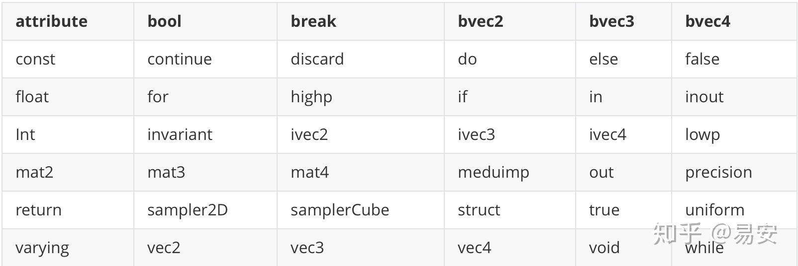
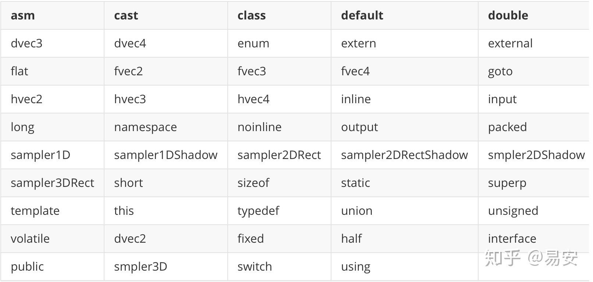
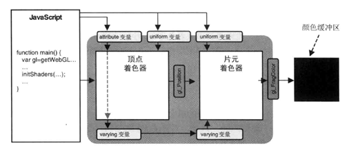
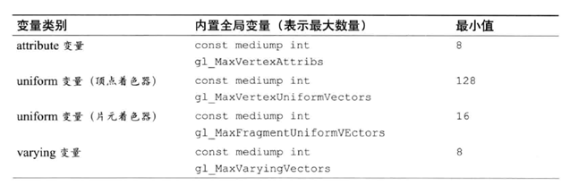
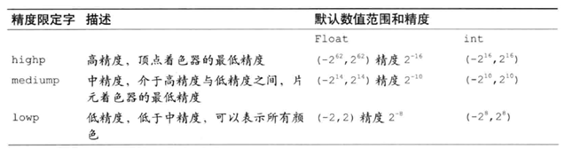
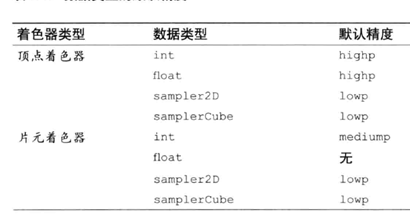

对应《WebGL编程指南》第六章 GLSL ES
总览
本章知识点：
1、数据、变量和变量类型
2、矢量、矩阵、结构体、数组、采样器（纹理）
3、运算、程序流、函数
4、attribute、uniform和varying变量
5、精度限定词
6、预处理和指令
回顾
基本着色器代码
1 | //顶点着色器程序 |
知识点
一、GLSL ES概述
GLSL ES编程语言是在OpenGL着色器语言（GLSL）基础上，删除和简化一部分功能后形成的。各位看到ES版本应该会想到GLSL ES应用在手机、游戏主机等设备上，这样可以降低硬件的功耗，同时也能减少性能开销。
GLSL ES的语法与C语言类似。此外，着色器语言也开始被用来完成一些通用的任务，如图像处理和数据运算（所谓的GPGPU）。
二、基础语法
2.1 基础
GLSL ES对大小写是敏感的，例如：Niuniu和niuniu这就对应的是两个不同的变量；
每条语句都要有;结束
2.2 执行次序
每个着色器程序都要有main()函数，就像C语言一样，每个着色器程序都从main开始执行，但是GLSL ES中的main()函数并不接收任何参数，并且必须是void类型；
void表示函数没有返回值，若有返回值，需明确返回值类型。
2.3 注释
单行注释使用//，多行注释则是/* 注释 */；
三、数据值类型（数值额布尔值）
3.1 GLSL ES支持两种数据值类型：
数值类型：GLSL ES支持整数类型和浮点数，没有小数点的值被认定为整数类型，而有小数点的则被认为是浮点数；
布尔值类型：true和false，无需多言。
GLSL ES不支持字符串类型，虽然字符串对三维图形语言来说还是有一定意义的。
四、变量
4.1 变量名规则
-
只能由
a-z、A-Z、0-9以及_组成 -
变量名的第一个字符不能为数字
-
不能以
gl_、webgl_或_webgl开头，这些前缀已被OpenGL ES保留了 -
不能是下表中所列出的关键字

GLSL ES保留字：

4.2 GLSL ES是强类型语言
声明变量的方式：<类型> <变量名>，例：
1 | vec4 a_Position |
进行赋值操作时，等号左右两侧的数据类型必须一致。
五、基本类型
| 类型 | 描述 |
|---|---|
| float | 单精度浮点类型 |
| int | 整型数 |
| bool | 布尔值 |
1 | // 声明变量 |
5.1 赋值和类型转换
1 | // 强制类型转换 |
5.2 运算符
| 类别 | GLSL ES数据类型 |
|---|---|
| - * / + | 加减乘除 |
| ++ – | 自增、自减 |
| = += -= *= /= | 赋值、算术赋值 |
| < > <= >= == != | 比较 |
| ! | 取反 |
| && || ^^ | 逻辑与、或、异或 |
| ? : | 三元运算符 |
逻辑与（&&）：只有第一个表达式的计算值为true时才会计算第二个表达式（找错）。
逻辑或（||）：只有第一个表达式的计算值为false时才会计算第二个表达式（找对）。
逻辑异或（^^）：只有当左右两个表达式中有且仅有一个为true时，运算结果为true，否则为false。
六、矢量和矩阵
6.1 矢量和矩阵举例
矢量 $\begin{pmatrix}
8 & 3 & 0
\end{pmatrix}
$ 矩阵$
\begin{bmatrix}
8 & 3 & 0 \\
4 & 3 & 6 \\
3 & 2 & 6
\end{bmatrix}
$
6.2 矢量和矩阵的类型
| 类别 | GLSL ES | 描述 |
|---|---|---|
| 矢量 | vec2、vec3、vec4 | 具有2/3/4个浮点数元素的矢量 |
| ivec2、ivec3、ivec4 | 具有2/3/4个整型数元素的矢量 | |
| bvec2、bvec3、bvec4 | 具有2/3/4个布尔值元素的矢量 | |
| 矩阵 | mat2、mat3、mat4 | 2x2、3x3、4x4的浮点数元素的矩阵 |
6.3 赋值和构造
6.3.1 通常使用与数据类型同名的内置构造函数来生成变量，对于vec4类型，就可以使用内置的vec4()函数，如：
1 | vec4 v4 = vec4(1.0,2.0,3.0,4.0); |
6.3.2 构造函数
概念：专门创建指定类型的变量的函数被称为构造函数，构造函数的名称和其创建的变量的类型名称总数一致的。
6.4 矢量构造函数
1 | vec3 v3 = vec3(1.0, 0.0, 0.5); // 将矢量v3设为(1.0, 0.0, 0.5) |
6.5 矩阵构造函数
矩阵构造函数的使用方式与矢量构造函数的使用方式类似，但是要保证存储在矩阵中的元素是按照列主序排列的。下面是使用矩阵构造函数的不同方式。
6.5.1 方式一
使用矩阵构造函数：
1 | mat4 m4 = mat4(1.0, 2.0, 3.0, 4.0, |
上面构造的4 x 4矩阵对应的是：$
\begin{bmatrix}
1.0 & 5.0 & 9.0 & 13.0 \\
2.0 & 6.0 & 10.0 & 14.0 \\
3.0 & 7.0 & 11.0 & 15.0 \\
4.0 & 8.0 & 12.0 & 16.0
\end{bmatrix}
$
6.5.2 方式二
也可以向矩阵构造函数中传入一个或多个矢量，按照列主序使用矢量里的元素值来构造矩阵：
1 | vec2 v2_1 = vec2(1.0, 3.0); |
6.5.3 方式三
当然使用浮点数和矢量组合的方式来构造矩阵也是可以的：
1 | vec2 v2 = vec2(2.0, 4.0); |
6.5.4 方式四
如果想构造单位矩阵，那么有更简单的方式：
1 | mat3 m3 = mat3(1.0); |
6.6 访问矢量和矩阵的元素
为了访问矢量或矩阵中的元素，可以使用.或[]运算符，下面将详细叙述。
6.6.1 访问矢量元素
.运算符
在矢量变量名后接.运算符，然后接分量名，就可以访问矢量的元素了。矢量的分量名如下表：
| 类别 | 描述 |
|---|---|
| x，y，z，w | 用来获取顶点坐标的分量 |
| r，g，b，a | 用来获取颜色分量 |
| s，t，p，q | 用来获取纹理坐标分量 |
事实上，任何矢量的x、r或s分量都会返回第一个分量
1 | vec4 v4 = vec4(1.0, 1.0, 1.0, 0.0); |
混合
其实，任何矢量的x、r或s都是返回第一个分量值，同理y/g/t返回第二个分量。我们还可以通过下面的方式给其他矢量赋值：
1 | vec4 v4 = vec4(0.0, 1.0, 1.0, 0.5); |
上面的代码中，将同一个集合的多个分量名共同置于点运算符后，就可以从矢量中同时提取出多个分量，这个过程也称作混合。当然，聚合分量名也可以作为赋值表达式的左值：
1 | vec4 position = vec4(1.0,2.0,3.0,4.0); |
6.6.2 访问矩阵元素
[]运算符
1 | mat4 m4 = mat4(1.0, 2.0, 3.0, 4.0, |
访问矩阵中元素可以像我们JS中访问二维数组一样：m4[0][0]，这就获取到了m4中的第一个元素1.0，在前面的介绍中有提到，可以使用矢量创建矩阵，当然我们也可以在矩阵中获取矢量：
1 | vec4 v4 = m4[0]; // 第一列元素 (1.0, 2.0, 3.0, 4.0) |
同样可以使用点操作符获取分量值：
1 | float m1_2 = m4[0].x; // 将m1_2设置为m4第1列的第1个元素 |
常量索引值
在[]中只能出现的索引值必须是常量索引值，其定义如下：
- 整型字面量(如0或1)
- 用
const修饰的全局变量或局部变量，不包括函数参数 - 循环索引
- 由前述三条的项组成的表达式
下面这个例子就用到了const变量作为访问数组元素的索引：
1 | const int index = 0 // 只读 |
注意，不能使用未经const修饰的变量作为索引（除非是循环索引）
1 | int index = 0 |
6.7 运算
6.7.1 运算符
| 运算符 | 运算 | 使用数据类型 |
|---|---|---|
| * / | 乘除 | 适用于vec[234]和mat[234] |
| + - | 加减 | |
| ++ – | 自增/减 | 适用于vec[234]和mat[234] |
| = += -= *= /= | 赋值、运算赋值 | 适用于vec[234]和mat[234] |
| == != | 比较 | 适用于vec[234]和mat[234]，对于==，如果两个操作数的每一个分量都相同，那么返回true；对于!=，如果任意分量不同，返回true。 |
补充：
矢量和矩阵的比较不能使用<、>、<=、>=，应该使用内置函数如lessThan()；
若你想逐一分量比较，可使用内置函数equal()或notEqual()；
当运算赋值操作作用于矢量或矩阵时，实际上是逐分量地对每一个元素进行独立的运算。
6.7.2 矢量运算
1 | vec2 v2_1 = (1.0, 2.0); |
6.7.3 矩阵运算
1 | // 定义变量 |
矩阵和浮点数运算
矩阵与浮点数的运算发生在每个分量上：
1 | m2_1 + f; // m2_1[0].x + f; m2_1[0].y + f; m2_1[1].x + f; m2_1[1].y + f; |
矩阵右乘矢量
矩阵右乘矢量的结果是矢量，其中每个分量都是原矢量中的对应分量，乘上矩阵对应行的每个元素的积的和。可参考之前的矢量乘法实现旋转矩阵。
1 | // 矩阵右乘矢量 |
例：$
\begin{bmatrix}
1 & 2 & 3 \\
4 & 1 & 2 \\
1 & 1 & 2
\end{bmatrix}
$ * $
\begin{bmatrix}
2 \\
3 \\
1
\end{bmatrix}$ = $
\begin{bmatrix}
11 \\
13 \\
7
\end{bmatrix}
$
矩阵左乘矢量
结果与右乘不同
1 | // 矩阵左乘矢量 |
例： $
\begin{bmatrix}
2 \\
3 \\
1
\end{bmatrix}$ * $
\begin{bmatrix}
1 & 2 & 3 \\
4 & 1 & 2 \\
1 & 1 & 2
\end{bmatrix}
$ = $
\begin{bmatrix}
15 \\
8 \\
14
\end{bmatrix}
$
矩阵与矩阵相乘
1 | // 矩阵相乘 |
七、结构体
7.1 结构体定义
在GLSL ES中可以使用struct关键字定义结构体：
1 | // 定义结构体 |
7.2 赋值和构造
结构体有标准的构造函数，其名称与结构体一致。构造函数的参数顺序必须与结构体定义中的成员顺序一致。
1 | light_1 = light(vec4(0.0,1.0,0.0,1.0), vec3(8.0,3.0,0.0)) |
7.3 访问成员
通过.操作符访问成员变量：
1 | vec4 lcolor = light_1.color; |
7.4 运算符
结构体的成员可参与与其自身类型支持的任何运算，但是结构体本身只支持赋值（=）和比较（==、!=）。
赋值和比较运算符不适用于含有数组与纹理成员的结构体
八、数组
8.1 声明数组
GLSL ES只支持一维数组，而且数组对象不支持pop()和push()等操作，创建数组时也不需要使用new运算符。声明方式如下：
1 | float floatArray[4]; // 声明含有4个浮点数元素的数组 |
8.2 定义数组
数组的长度必须是大于0的整形常量表达式，如下定义：
-
整形字面量（0、1）
-
用const限定字修饰的全局变量或局部变量，不包含函数参数
-
由上述两条中的项组成的表达式
因此，下面的代码将会出错：
1 | int size = 4; |
注意：不可以用const限定字来修饰数组本身。
只有整型常量表达式和uniform变量可以被用作数组的索引值，此外，与js或c不同，数组不能再声明时被一次性地初始化，而必须显式的对每个元素进行初始化。如下：
1 | vec4Array[0] = vec4(4.0,3.0,4.0,9.0) |
数组本身只支持
[]运算符，但数组元素能够参与其自身类型支持的任意运算。
九、取样器（纹理）
9.1 概念
我们必须通过取样器（sampler）类型变量访问纹理。有两种基本的取样器类型：sampler2D和samplerCube。取样器变量只能是uniform变量，或者需要访问纹理的函数，如texture2D()函数的参数。比如：
1 | uniform smapler2D u_Sampler; |
并且，唯一能给取样器变量赋值的就是纹理单元编号，并且必须使用WebGL提供的方法gl.uniform1i()来赋值，比如在之前的文章中我们使用gl.uniform1i(u_Sampler, 0)将纹理单元编号0传给着色器。如：
1 | gl.uniform1i(u_Sampler, 0) //将纹理单元编号0传给着色器 |
9.2 规范
除了=、==、!=，取样器变量不可以作为操作参数与运算。
取样器类型变量受到着色器支持的纹理单元的最大数量限制，如下表。
| 着色器 | 表示最大数量的内置常量 | 最小数量 |
|---|---|---|
| 顶点着色器 | const mediump int gl_MaxVertexTextureImageUnits | 0 |
| 片元着色器 | const mediump int gl_MaxTextureImageUnits | 8 |
mediump是一个精度限定词。
十、程序流程控制：分支和循环
10.1 if和if-else语句
if-else结构用法与C语言和js一致，但没有switch语句
1 | if (...) { |
10.2 for语句
只支持for循环，而且只能在初始化表达式（for(;;)中第一个分号前面的位置）中定义循环变量，例如：
1 | for (int i = 0; i < 10; i++) { |
其他规范：
-
只允许有一个循环变量，且只能是int或float类型
-
循环表达式必须是以下形式：
i++、i–、i+=常量表达式、i-=常量表达式
-
条件表达式必须是循环变量与整型常量比较
-
在循环体内，循环变量不可被赋值
10.3 continue、break、discard语句
只能在for语句中使用continue、break。
-
continue终止包含该语句的最内层循环和执行循环表达式（递增/递减循环变量），然后执行下一次循环
-
break终止包含该语句的最内层循环，并不再执行循环
-
discard只能在片元着色器中使用，表示放弃当前片元，直接处理下一个片元
十一、函数
11.1 声明函数
1 | 返回类型 函数名(type0 arg0, ... , typen argn){ |
如果函数不返回值，那么函数就不需要return语句；也可以将自己定义的结构体类型指定为返回类型，但是结构体的成员不能有数组。
下面这段代码实现了将RGBA颜色值转化为亮度值：
1 | float luma (vec4 color) { |
11.2 规范声明
如果函数定义在其调用之后，那么我们必须在进行调用之前先声明该函数的规范（类似C语言）。规范声明不预先告诉WebGL系统函数的参数、参数类型、返回值类型等等。例如：
1 | float luma(vec4); // 规范声明 |
11.3 参数限定词
在GLSL ES中有几个参数限定字控制参数的行为，如下：
1 | in 值传递，可以省略，默认就是值传递 |
| 类别 | 规则 | 描述 |
|---|---|---|
| in | 向函数中传入值 | 可使用，可修改，但内部的修改不会影响传入的值 |
| const in | 向函数中传入值 | 可使用，不可修改 |
| out | 在函数中被赋值，并被传出 | 传入变量引用，在函数内部修改会影响外部传入的变量 |
| inout | 传入函数并传出 | 传入变量引用，函数会用到变量初始值，然后被修改传出 |
当缺省参数限定词时默认与in一样，看下面in、out的使用示例：
1 | void luma2(in vec3 color, out float brightness) { |
luma2函数本身不返回值，函数返回类型设置为void，第一个参数限定词为in(其实可以省略)，第二个参数brightness限定词为out，用于返回计算结果。
十二、内置函数
WebGL着色器提供了一系列内置函数，所谓内置函数和内置变量一样，也就是说不用声明，就可以直接调用。比如向量点乘dot()、向量叉乘cross()、两点之间距离distance()等用于数学计算的函数。
12.1 角度函数和三角函数
WebGL着色器内置函数三角函数，名称和初高中数学写法基本一致，函数参数是角度的弧度值，函数参数数据类型是浮点数float。
| 内置函数 | 功能 |
|---|---|
| radians() | 角度值转弧度值 |
| degrees() | 弧度值转角度值 |
| sin(弧度) | 正弦值 |
| cos(弧度) | 余弦值 |
| tan(弧度) | 正切值 |
| asin() | 反正弦值(弧度) |
| acos() | 反余弦值(弧度) |
| atan() | 反正切值(弧度) |
1 | //角度为30度，并把角度值转化为弧度值 |
12.2 几何函数
内置函数几何函数主要是与几何相关计算的函数，比如计算两点之间的距离，计算两个向量的叉乘、点乘…
| 内置函数 | 功能 |
|---|---|
| length(a) | 向量a长度 |
| distance(a,b) | a、b两点之间距离 |
| dot(a,b) | 两向量点积 |
| cross(a,b) | 两向量叉乘 |
| normalize(a) | 向量a归一化,长度变为1，方向不变，即返回值单位向量 |
| faceforward(a,b,c) | 向量朝前：如果c、b两向量点乘小于0(dot(c,b) < 0)，则返回a，否则返回-a |
| reflect(Ru,Fa) 或 reflect(Ru,Fa,Zh) | 向量反射：比如通过入射光计算反射光方向向量,Fa表示反射平面的法线方向(单位向量)，Ru表示入射光线的方向(单位向量)，Zh表示折射率 |
1 | // 二维平面：计算(0.5, 0.0)和(0.5, 0.5)两点之间距离 |
12.3 指数函数
着色器常见内置函数可以参考数学或javascript语言。
| 内置函数 | 功能 |
|---|---|
| pow(x,n) | x的n次幂函数 |
| exp(x) | x的自然指数e |
| log(x) | x自然对数 |
| exp2(x) | 2的指数x |
| log2() | 对数函数，底数为2 |
| sqrt() | 平方根 |
| inversesqrt() | 平方根倒数 |
12.4 通用函数
| 内置函数 | 功能 |
|---|---|
| abs(x) | 绝对值 |
| sign(x) | 判断参数符号，x是正数返回1.0；x是0.0返回0.0，x是负数返回-1.0 |
| floor(x) | 取整，向下取整 |
| ceil(x) | 取整，向上取整 |
| fract(x) | 返回x小数部分 |
| min(a,b) | 比较大小，返回较小的值 |
| max(a,b) | 比较大小，返回较大的值 |
| mod(x,y) | 表示x–y*floor(x/y) |
| clamp(x,min,max) | 规整输入值,x与min和max比较大小返回中间大小的值，运算规则：min (max (x, min), max) |
| mix(m,n,k) | 线性插值计算,插值区间[m,n],插值系数k，插值计算公式：m*(1-k)+n*k |
1 | // 如果两向量v1, v2点积是正数就保留，如果是负数就返回0.0 |
12.5 矩阵函数
1 | mat matrixCompMult (mat x, mat y) |
注意内置矩阵函数
matrixCompMult()不是按照线性代数中的矩阵乘法规则执行的，如果是线性代数中矩阵乘法规则，直接使用乘法符号*就可以，即x*y。内置矩阵函数
matrixCompMult()的运算规则是同行同列的元素相乘，也就是x[i][j]和y[i][j]相乘
12.6 向量关系函数
着色器向量关系函数和javascript关系函数类似，区别在于着色器向量关系函数不是直接比较两个数的大小，而是对两个向量的每个元素都进行比较。
比较函数返回值是true或flase。
| 内置函数 | 判断 |
|---|---|
| lessThan(x,y) | x是否小于y ,参数是vec或ivec |
| lessThanEqual(x,y) | x是否小于或等于y,参数是vec或ivec |
| greaterThan(x,y) | x是否大于y ,参数是vec或ivec |
| greaterThanEqual(x,y) | x是否大于或等于y,参数是vec或ivec |
| equal(x,y) | x是否等于y，向量每个分量是否都相等,参数是vec或ivec |
| any(x) | x向量是否存在一个分量是true，参数是bvec |
| all(x) | x向量所有分量是否全部为true ，参数是bvec |
| not(x) | x所有分量执行逻辑非运算 ，参数是bvec |
12.7 纹理查询函数
纹理采用函数主要用于处理WebGL的纹理贴图，根据st坐标从图像上获取像素值。
| 内置函数 | 功能 |
|---|---|
| texture2D() | 在二维纹理获取纹素 |
| textureCube() | 在立方体纹理中获取纹素 |
| texture2DProj | texture2D的投影版本 |
| texture2DLod | texture2D的金字塔版本 |
| textureCubeLogd | textureCube的金字塔版本 |
| texture2DProjLod | texture2DLod的投影版本 |
12.8 内置函数参数常见形式
内置函数参数数据类型常见形式：float、vec2、vec3、vec4
1 | // 角度转弧度 |
十三、全局变量和局部变量
同Js和C语言，变量声明在函数外面就是全局变量，在函数内部就是局部变量，局部变量只能在函数内部访问。
下一节涉及的attribute变量、varying变量和uniform变量由于需要在函数外部访问，所以必须声明为全局变量。
十四、存储限定字
在GLSL ES中，我们经常使用attriute、varying和uniform限定字来修饰变量，如图所示：

此外，我们有时也会使用const限定字，它表示着色器中的某个变量使恒定的常量。
14.1 const
特点：
- 被
const修饰的值不能被改变 - 在声明
const变量时，需要将const写在类型之前 - 声明时必须进行初始化
- 声明之后不能去改变值
1 | const int light1 = 22649897 |
14.2 attribute变量
attribute变量只能出现在定点着色器中，只能被声明为全局变量，被用来表示逐顶点的信息。
顶点着色器中能够容纳的attribute变量的最大数目与设备有关，你可以通过访问内置的全局常量获取该值。但是，支持WebGL环境都支持至少8个attribute变量。如下所示：

逐顶点：比如，如果线段两个顶点(4.0, 3.0, 6.0)和(8.0, 3.0 0.0)，这两个坐标就会传递给attribute变量。而线段上的其他点，虽然也被画了出来，但它们不是顶点，坐标未曾传给attribute变量，也未曾被顶点着色器处理过。如果你想要让顶点着色器坐标处理它们，你就需要将它作为一个顶点添加到图像中来。
14.3 uniform变量
可以用在顶点着色器和片元着色器中，且必须是全局变量。uniform变量是只读的，它可以是除了数组或结构体之外的任意类型。如果顶点着色器和片元着色器中声明了同名的uniform变量，那么它就会被两种着色器共享。
uniform变量包含了“一致”（非逐顶点/逐片元的，各顶点或各片元共用）的数据。比如，变换矩阵就不是逐顶点的，而是所有顶点共用的，所以它在着色器中是uniform变量。
1 | uniform mat4 u_ViewMatrix |
14.4 varying变量
必须是全局变量，它的任务是从顶点着色器向片元着色器传输数据。我们必须在梁总着色器中声明同名、同类型的varying变量。它的类型只能是以下类型：float、vec2、vec3、vec4、mat2、 mat 3、mat4。
1 | varying vec2 v_TexCoord |
十五、精度限定字
GLSL ES新引入了精度限定字，目的是帮助着色器程序提高运行效率，消减内存开支。使用精度限定字，你就能够精细地控制程序在效果和性能间的平衡。然而，精度限定字是可选的，如果你不确定，可以使用下面这个适中的默认值：
1 |
|
WebGL程序支持三种精度，其限定字分别为highp、mediump、lowp。如下所示：

下面是声明变量精度的几个例子：
1 | mediump float size; //中精度的浮点型变量 |
为每个变量都声明精度很繁琐，我们也可以使用关键字precision来声明着色器的默认精度，并且这行代码必须放在顶点着色器或片元着色器的顶部，格式如下：
1 | // precision 精度限定字 类型名称 |
使用精度限定字一般都只在片元着色器中使用，这是因为，除了片元着色器的float类型没有默认精度（需手动指定，否则报错），其他类型都有默认精度。如下是数据类型的默认精度：

WebGL是否在片元着色器中支持highp精度，取决于具体的设备。如果设备支持，那么着色器就会定义内置宏GL_FRAGMENT_PRECISION_HIGH（见下一节）。
十六、预处理指令——宏
GLSL ES支持预处理指令。预处理指令用来在真正编译之前对代码进行预处理。都已#号开始。下面就是预定义float类型精度的预处理指令：
1 |
|
16.1 预处理指令
下面是我们在GLSL ES中可能用到的三种预处理指令：
1 |
|
16.2 宏定义
可以使用以下指定进行宏定义：
1 |
16.3 结束宏
可以使用undef 宏名，结束宏定义。例如：
1 |
16.4 宏分支
可以使用#else指令配合#ifdef：
1 |
|
16.5 宏名规范
宏的名称可以随意起，只要不和预定义的内置宏相同。
下面是预定义的内置宏：
| 宏 | 描述 |
|---|---|
| GL_ES | 在OpenGL ES2.0中定义为1 |
| GL_FRAGEMENT_PRECISION_HIGH | 片元着色器支持highp精度 |
所以，可以这样使用宏来进行精度限定：
1 |
|
可以使用#version来指定着色器使用的GLSL ES版本：
1 |
|
Tips: Please indicate the source and original author when reprinting or quoting this article.